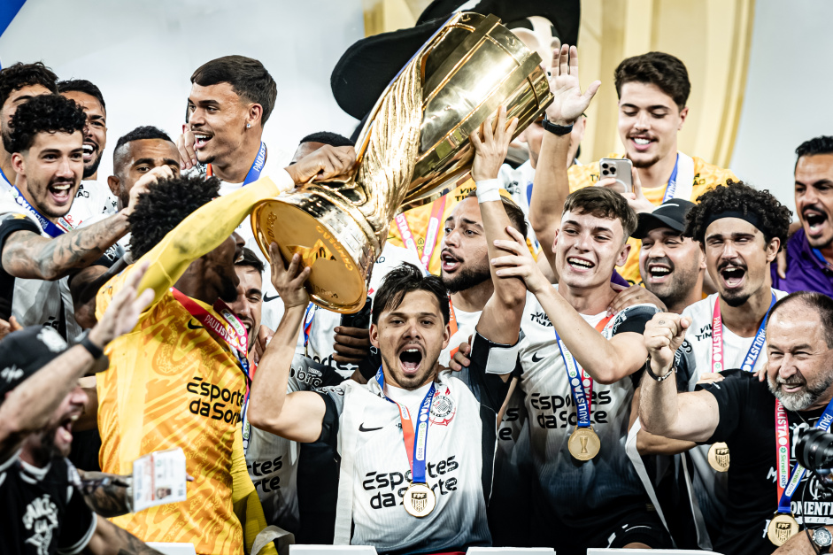
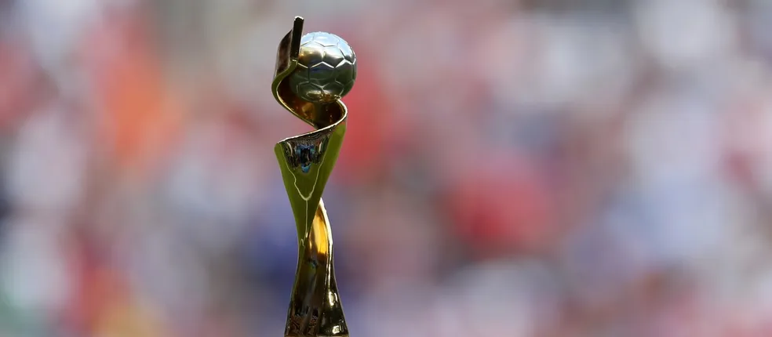

CAMPEÃO PAULISTA!
Com gol de Yuri Alberto no jogo de ida, Corinthians é campeão Paulista em casa contra o Palmeiras. Após seis anos sem conquistar ao menos um título, Corinthians leva a melhor e garante o Campeonato Paulista 2025.

JOGO HISTÓRICO!
Com reviravolta absurda a Inter de Milão supera o Barcelona no San Siro com placar agregado de 7 a 6, e está de volta para a final da UEFA Champions League contra o PSG.

RUMO À MUNIQUE!
Paris Saint - Germain supera o Arsenal e é finalista da Champions League juntamente da Inter de Milão, a final será em Munique no dia 30 de maio.

VIRA-CASACA
Dudu, agora ex jogador do Cruzeiro é anunciado pelo principal rival do clube. Atlético Mineiro anunciou o jogador com provocação à Raposa.
DE CASA NOVA!
Darlan fez seu último jogo pelo SESI Bauro, e agora viajará para Verona na Itália, em seu novo clube.

PODE VOLTAR?
Campeão olímpico confirma ano sabático com a camisa do Brasil, mas vai esperar até 2026 para definir adeus definitivo.

DE FORA!
Gabi puxa relação de inscritas, que tem ausência na Liga das Nações, como Thaísa, Carol, Lorenne e Nathinha.

DEFINIDA AS SEDES!
Copa do Mundo feminina será disputada: Rio de Janeiro, São Paulo, Belo Horizonte, Recife, Fortaleza, Salvador, Brasília e Porto Alegre.
